Output Unit
Types of Output Units:
1. Soft Output
The output we see on a monitor is known as a soft copy.
2. Hard Output
The output we get from a printer is known as a hard copy.
Monitor
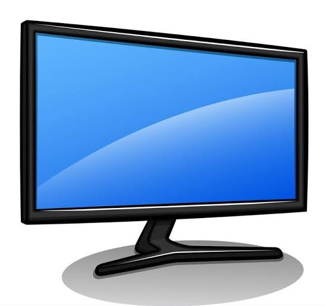1. CRT (Cathode Ray Tube)
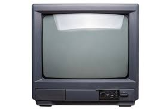2. LCD (Liquid Crystal Display)
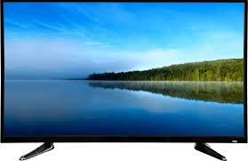3. LED (Light Emitting Diode)

4. TFT (Thin Film Transistor)
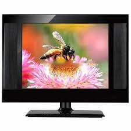Desktop
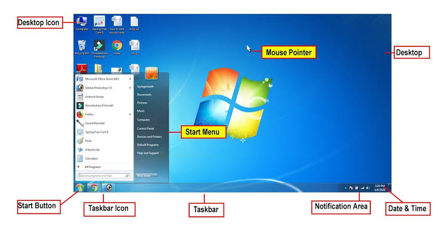The first screen that appears after the Windows operating system loads is called the desktop.
Icon
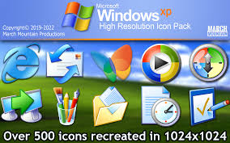Small pictures on the desktop are called icons, such as Notepad, Paint, and MS Word.
Taskbar
The bottom bar on the desktop screen is called the taskbar.
Printer
Printers provide a hard copy of information.
There are two types of printers:
1. Impact Printer
Impact printers physically strike the paper.
They are slower and have lower quality prints.
Examples:
1. Dot Matrix Printer
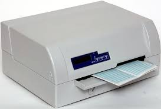2. Chain Printer
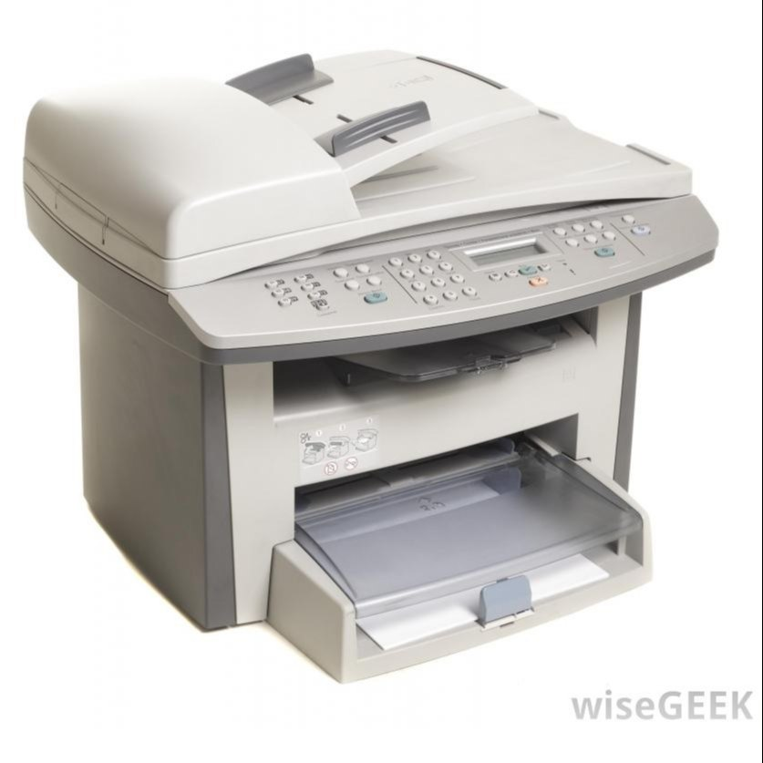3. Drum Printer
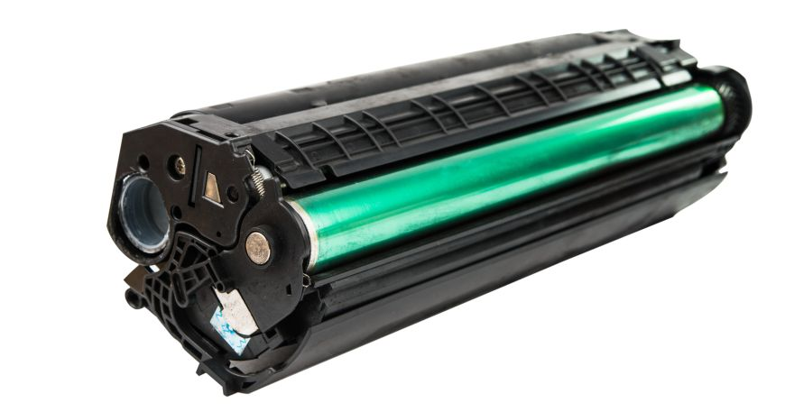2. Non-Impact Printer
Non-impact printers do not physically strike the paper.
They are faster and produce high-quality prints.
Examples:
1. Inkjet Printer
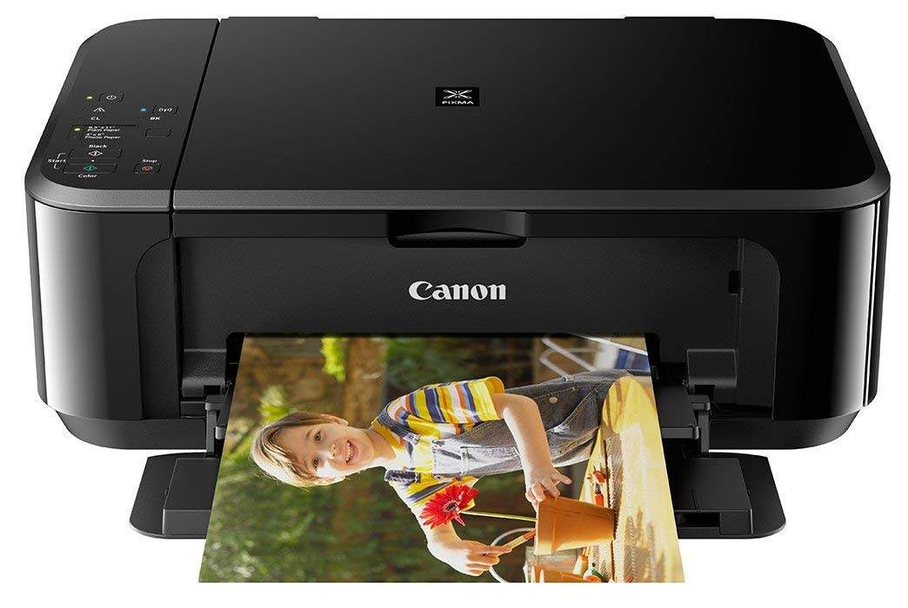2. Laser Printer
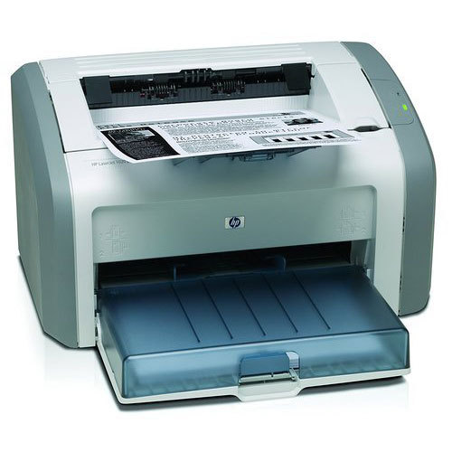